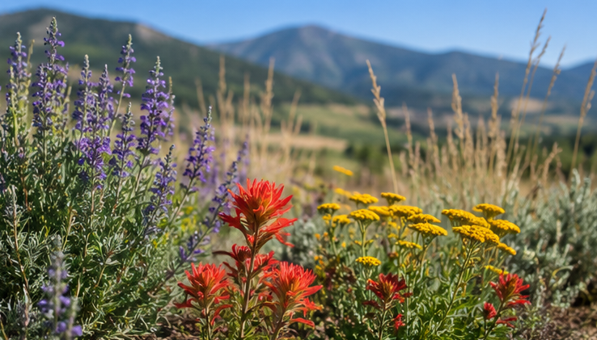

WaterWise Landscaping was created to help homeowners in Northern Utah design yards that use less water and support local ecosystems.
Northern Utah experiences hot summers and dry conditions, making drought-resistant landscaping an important part of sustainable living.

©Mary Burham 2026. All rights reserved.
Email Us